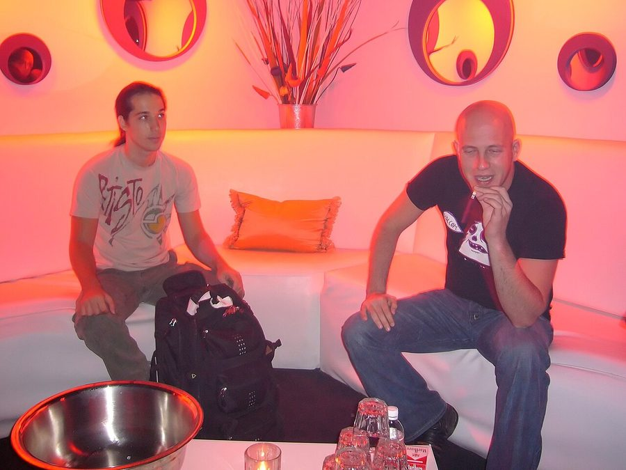

Infected Mushroom tour details confirmed



As revealed on ITM earlier this month, Israeli psytrance legends Infected Mushroom will be returning to Australia in February and March to give us a sneak peak of the material off their new album that’s due later this year. It was only last year that we saw them in the country for the sold out ‘Vicious Delicious’ tour, but since then they’ve continued to tour the world with their unmistakable fusion of psytrance, rock and live electronics. In fact, 2007 saw them play some of their biggest shows ever and when they return, you’ll get a chance to hear what future sounds they’ve got in store. More heavy metal guitars? We’ll have to wait and see.
Catch Infected Mushroom at the following shows…
Sat Feb 23 – Brisbane, Arena
Sun Feb 24 – Sydney, Home Nightclub
Tue Feb 26 – Adelaide, Channel Complex
Thu Feb 28 – Hobart, Syrup Nightclub
Fri Feb 29 – Melbourne, Palace Theatre
Sat Mar 1 – Cairns, Kangaventure
Sun Mar 2 – Perth, Club Capital
And check out this amazing footage from some of Infected Mushroom’s recent international gigs…